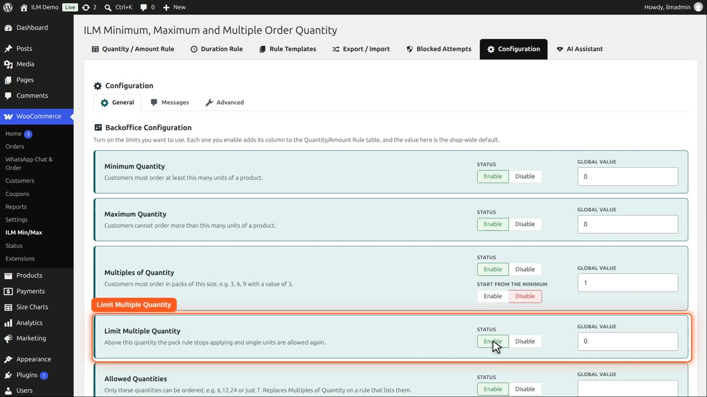
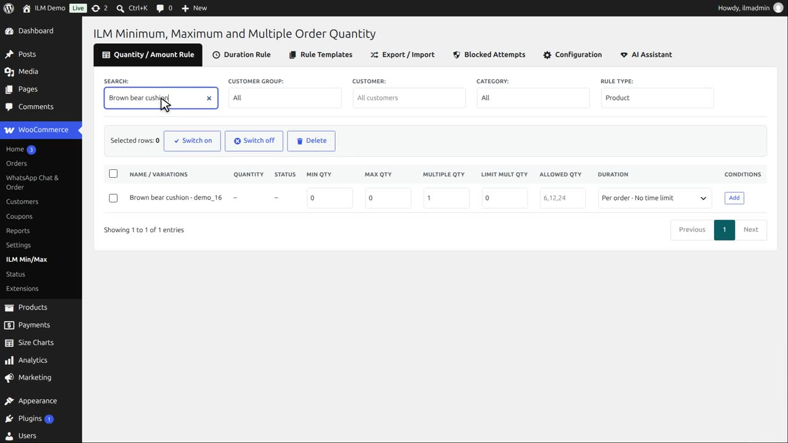
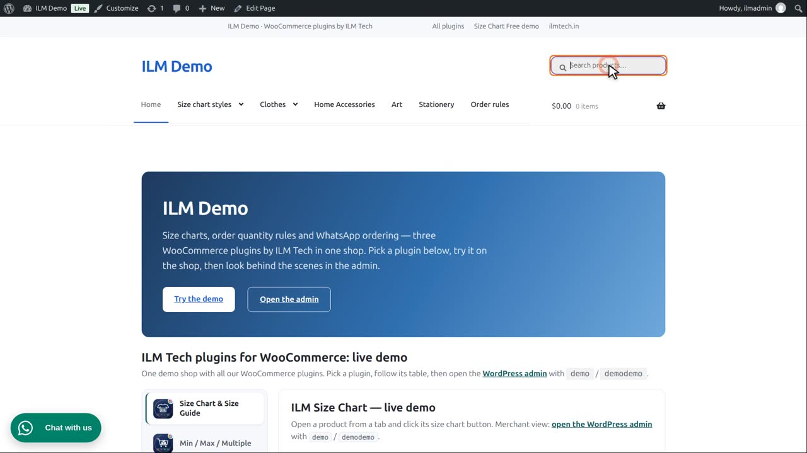
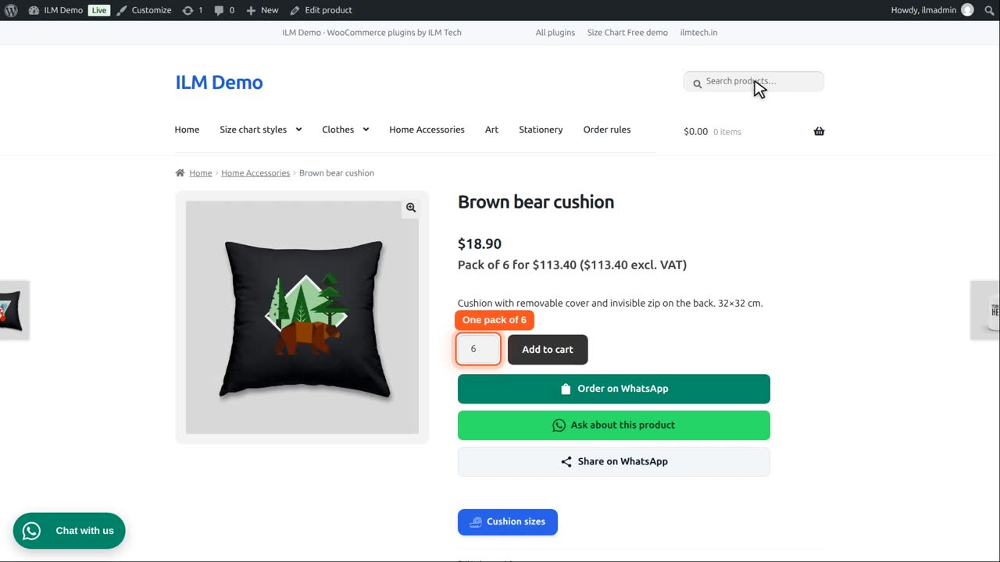
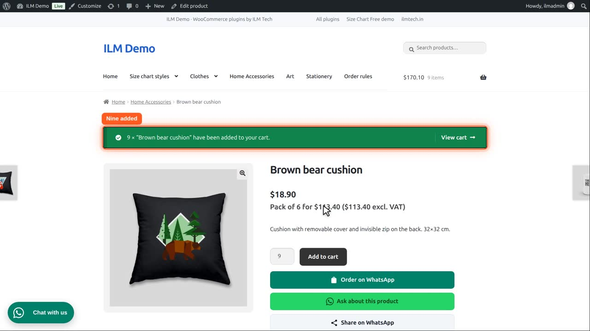
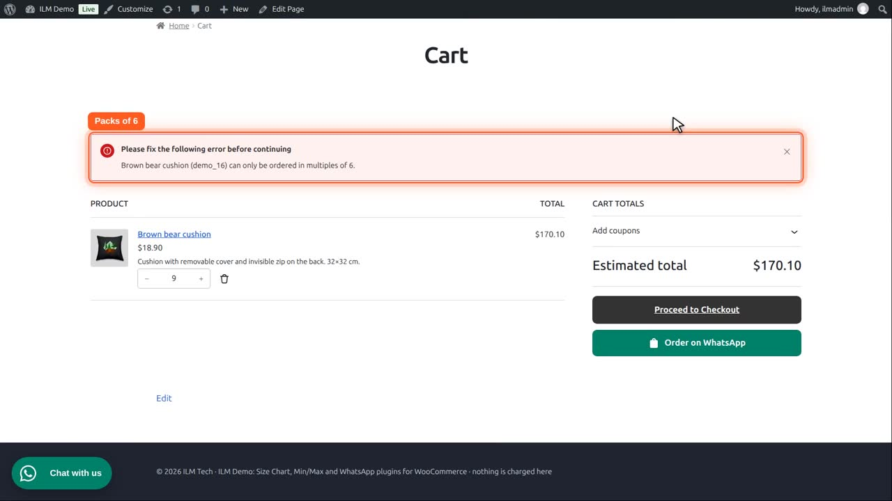

| Setting | What it does |
|---|---|
| Limit Multiple Quantity | Above this quantity, the pack rule stops applying and single units are allowed again. |
On the Configuration tab, enable Limit Multiple Quantity. It adds a Limit Mult Qty column to the rule table.

Take the Brown bear cushion. Search for it.

We set Multiple Qty to six and Limit Mult Qty to twelve. So it is sold in packs of six, up to twelve.

On the product page, the quantity starts at one pack of six.

Below the limit, packs still apply. Let us add nine, which is not a whole pack.

The cart asks for packs of six, and checkout stays locked.

From twelve upwards the limit is reached, so the pack rule stops: thirteen is fine, one unit at a time.